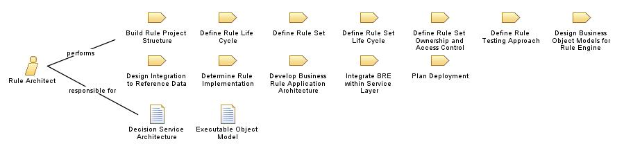

|
| The Rule Architect is responsible for defining and maintaining the structure of the rule-based application. |
| Role Sets: Business Rules Development |
|
Relationships
 |
| Additionally Performs |
|
| Modifies |
|
Main Description
|
A Rule Architect helps the team to:
-
work together in an agile fashion,
-
jointly own the solution, and to
-
interface well with other parts of the organisation.
The Rule Architect defines the structure and organisation of the rule-based system. Outside of the standard activities,
skills, roles and responsibilities of a software architect, his role extends to:
-
Selecting the technology to ensure performance of the rule execution
and usability of the BRMS platform
-
Designing the infrastructure necessary for
editing rules, and producing one or several Rule Sets
-
Building the structure of rule projects, the dependencies on the
executable domain object model.
-
Defining the decision services part of a SOA. Those services use Rule
Sets.
-
Ensuring that the overall deployment organization of the rules makes sense
from an application segmentation perspective
-
Ensuring optimization of rule execution
-
Establishing traceability for rules within the technical
architecture
-
Ensuring rule reuse
-
Designing the structure of the rule repository (defining the required
metadata customizations and possibly implementing the structure)
-
Developing the processes around repository management, rule life-cycle,
rule set life-cycle, rule governance
-
Coordinating with application developers on system design, implementation
and testing
-
Acting
as a liaison between business and IT
|
Staffing
| Skills |
Deep
knowledge of BRMS, BPMS products, software engineering process, UML, application integration, JEE, .Net, and data
to object mapping. Completed
by the basic set of competencies such as:
-
Competent with structure, models, UML
-
Understands rule application infrastructure, EAI, SOA
-
Detail oriented
-
Diligent about enforcing standards
-
Works
well with system designers, developers and testers
|
|